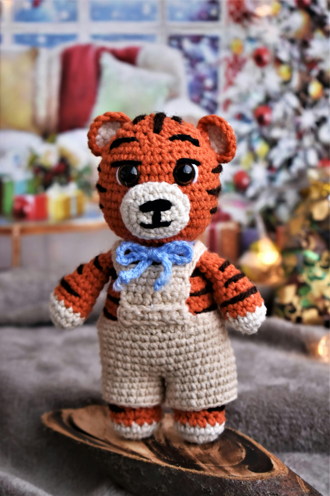

¡Bienvenido al mundo mágico de los Amigurumis!
¿Qué es un Amigurumi?
¿Te gustan los peluches? ¿Disfrutas creando cosas con tus propias manos? ¡Entonces te encantarán los Amigurumis!
Originarios de Japón, los Amigurumis son adorables muñecos tejidos a mano que han conquistado corazones en todo el mundo. Son más que simples peluches; son pequeñas obras de arte llenas de ternura y creatividad.
La palabra "Amigurumi" proviene de la unión de dos términos japoneses: "ami" que significa tejer y "nuigurumi" que significa muñeco de peluche.
La tradición japonesa asocia los amigurumis con la creencia de que cada uno de estos muñecos posee un alma, convirtiéndolos en compañeros especiales para sus creadores y dueños. Además, tejer amigurumis no solo es una actividad creativa, sino también terapéutica. Al involucrarnos en este arte, no solo damos vida a adorables criaturas, sino que también conectamos con el niño que llevamos dentro y encontramos una forma de expresar nuestras emociones y reducir el estrés.
¿Por qué hacer un Amigurumi?
Las razones para crear un Amigurumi son tan diversas como los colores del arcoíris. Algunos los hacen para desestresarse y relajarse, mientras que otros encuentran en ellos una actividad perfecta para compartir con amigos y familiares.
Los amigurumis pueden ser el regalo perfecto, un juguete único y hecho a mano, o incluso una pieza decorativa. Al hacer amigurumis, estamos creando algo con nuestras propias manos, lo que nos permite desarrollar nuestra creatividad, paciencia y habilidades manuales. Además, tejer estos muñecos puede ser una forma maravillosa de relajarse y desconectar del estrés diario.
Pero lo más importante es que crear Amigurumis es una forma de expresar tu creatividad y dar vida a tus propios personajes.
¿Estás listo para sumergirte en el maravilloso mundo de los Amigurumis? ¡Toma tu aguja de crochet, tu ovillo de lana favorito y prepárate para crear algo mágico!
Materiales para Crear Amigurumis / Puntadas para Amigurumis